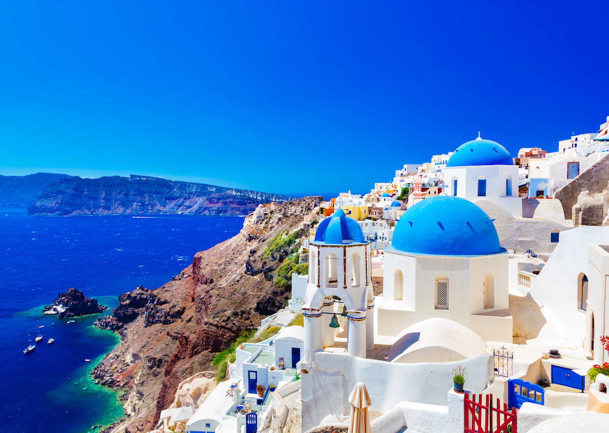

Flying Dove
Donald Campbell began cooking since the early age of 10 when he would help his mother cook for his family of 8. He fell in love with cooking and at the age of 17 he began an apprenticeship under the world renowned chef, Rule Verreau.
In 1999, 7 years after his apprenticeship, Campbell came to San Francisco, where his culinary skills soon landed him a position as Sous-Chef of Vscrete, where he worked with Fadobe Share.
After his tenure at Vscrete, Campbell was lured to rural Woodside and became the Chef de Cuisine at Zuknotate. At the pub, Campbell assisted rising star Chef Tony Rodgers, where he further refined his craft, and adopted a feeling of connection between food and farmer. In 2001 he joined longtime acquaintance and fellow New Yorker (via France) Laurent Manrique as Chef de Cuisine at Campton Place in San Francisco. Armellino continued this partnership when he moved to Aqua’s kitchen as Chef de Cuisine in 2003.
Under Campbell’s leadership, Flying Dove presents elegant, modern California Cuisine, emphasizing what is fresh, seasonal and sustainably produced.